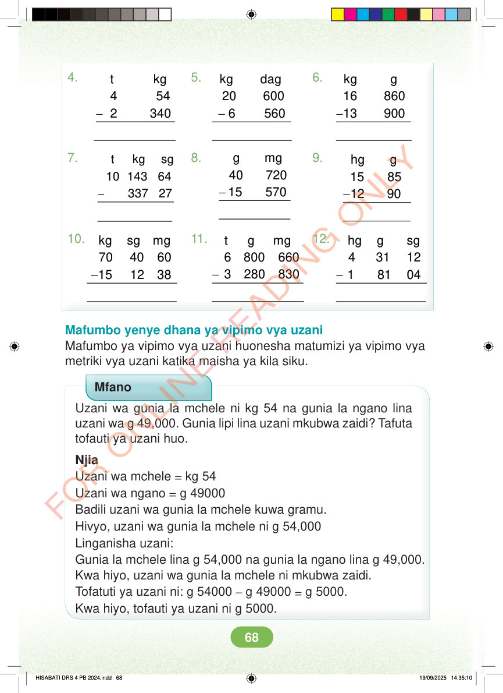

4. 5. 6. - - - t kg 4 54 2 340 kg dag 20 600 6 560 kg g 16 860 13 900 7. 8. 9. - - g mg 40 720 15 570 - t kg sg 10 143 64 337 27 hg g 15 85 12 90 10. 11. 12. - - - t g mg 6 800 660 3 280 830 hg g sg 4 31 12 1 81 04 kg sg mg 70 40 60 15 12 38 Mafumbo yenye dhana ya vipimo vya uzani Mafumbo ya vipimo vya uzani huonesha matumizi ya vipimo vya metriki vya uzani katika maisha ya kila siku. Mfano Uzani wa gunia la mchele ni kg 54 na gunia la ngano lina uzani wa g 49,000. Gunia lipi lina uzani mkubwa zaidi? Tafuta tofauti ya uzani huo. Njia Uzani wa mchele = kg 54 Uzani wa ngano = g 49000 Badili uzani wa gunia la mchele kuwa gramu. Hivyo, uzani wa gunia la mchele ni g 54,000 Linganisha uzani: Gunia la mchele lina g 54,000 na gunia la ngano lina g 49,000. Kwa hiyo, uzani wa gunia la mchele ni mkubwa zaidi. Tofatuti ya uzani ni: g 54000 – g 49000 = g 5000. Kwa hiyo, tofauti ya uzani ni g 5000. HISABATI DRS 4 PB 2024.indd 68 HISABATI DRS 4 PB 2024.indd 68 19/09/2025 14:35:10 19/09/2025 14:35:10